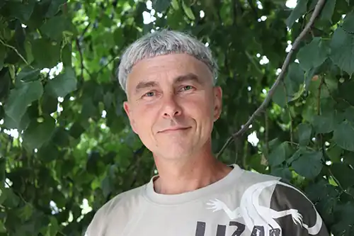

Письменник Петро Рух (Петро Вікторович Орлов) народився в Криму, в Євпаторії 26 грудня 1970 року. З семи років почав писати вірші. І з семи років їх друкують.
З Євпаторії переїхав у гірське село Прохолодне (Мангуш) Бахчисарайського району, де займався літературною діяльністю, а також власним господарством (землеробством, садівництвом, скотарством).
Виїхав з Криму після його окупації Росією 2014 року, поїхав у Київ. Заснував і очолив ТОВ "Східноєвропейське видавниче товариство імені Григорія Сковороди". 03.02.2015 звільнився з посади Президента ТОВ "Східноєвропейське видавниче товариство імені Григорія Сковороди" за власним бажанням у зв'язку з прийняттям рішення піти в лави ЗСУ для захисту суверенітету та територіальної цілісності України від агресії з боку Московіїї. З 04.02.2015 до 13.04.201 брав участь у бойових діях на території Донецької області в лавах 1-ї окремої танкової Сіверської бригади ЗСУ розвідником розвідувальної роти. У 2017-2018 роках був членом антикорупційної комісії громадської ради при Шевченківській районній в місті Києві державній адміністрації, 2018 року — членом Правління ГО "Рада небайдужих". З 2016 року був заступником координатора, а з 2021 року — координатором Шевченківської районної в місті Києві організації політичної партії "Рух Нових Сил Михайла Саакашвілі", членом якої став одночасно з її створенням 2016 року. Був кандидатом у народні депутати України, включеним до виборчого списку політичної партії "Рух Нових Сил Михайла Саакашвілі" на позачергових виборах народних депутатів України 21 липня 2019 року. Займається літературною, перекладацькою, викладацькою, а також громадською діяльністю. З 2021 року до повномасштабного вторгнення армії рашистів в Україну — голова Чернігівського відділення Офісу простих рішень та результатів Національної ради реформ при Президентові України, засновником якого був Михайло Саакашвілі. З 24 лютого 2022 року воює з рашистами стрільцем в складі 162 батальйону 119 бригади ЗСУ. Дружина Петра Руха Олена теж пише вірші. Деякі з них видавалися в її авторських книжках, деякі — у спільних поетичних збірках подружжя.